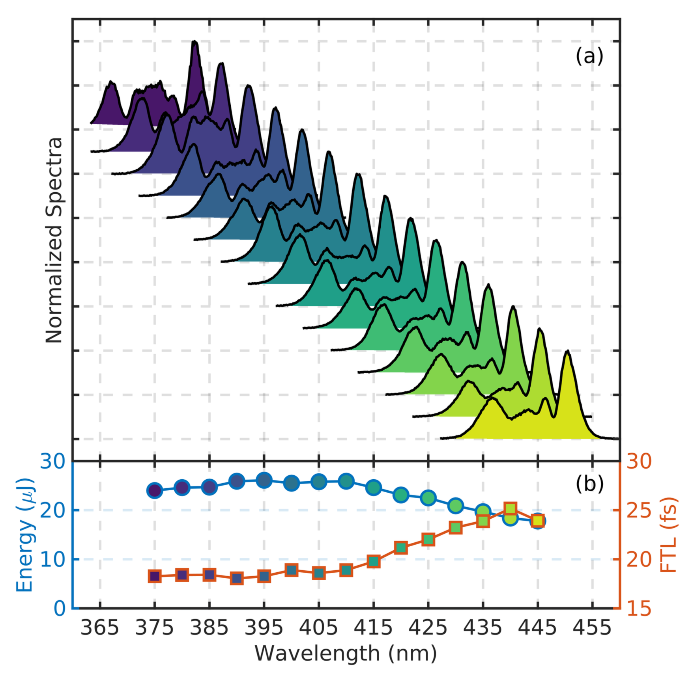

Pressure tuning at 401 nm (Kr, 1 m × 150 µm S-HCF).
Shaded = experiment; black = simulation.
FTL: 70.6 fs → 9.8 fs at 2.5 bar — 7× bandwidth increase.

Wavelength tunability at 1 bar Kr.
~17 nm FWHM and FTL 18–25 fs across the full OPA range (370–450 nm).
No optic changes — only OPA wavelength and pressure.
Source: Carbide 2 mJ, 330 fs, 33 kHz → Orpheus OPA (SHS, 350–520 nm)Fiber: 1 m, 150 µm core, Kr, stretched S-HCFPost-compression: prism pair or chirped mirrors → 15–30 fsKaufman, Larsen, … Bain, Forbes et al., Opt. Lett. 2025